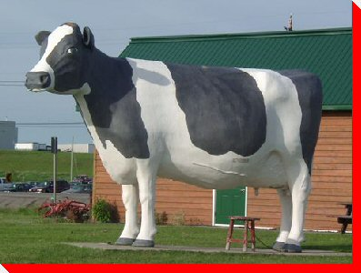

LARGE CANADIAN ROADSIDE ATTRACTIONS

Ms. Claybelt the Cow
Temiskaming Shores (in the former Township of Dymond), Ontario
Credit: Original - Township of Dymond, Ontario, Update -
Dawn Axcell
Return to Ontario Page
Return to Trans-Canada Highway Page
Main
|
What's New
|
By Location
|
Alphabetical Listing
|
By Type
Wanted Photos List
|
Links
|
Archive
Copyright @ 1998 - 2013 Ed Solonyka